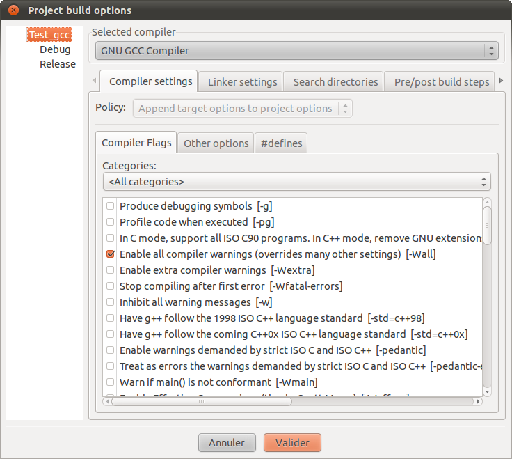
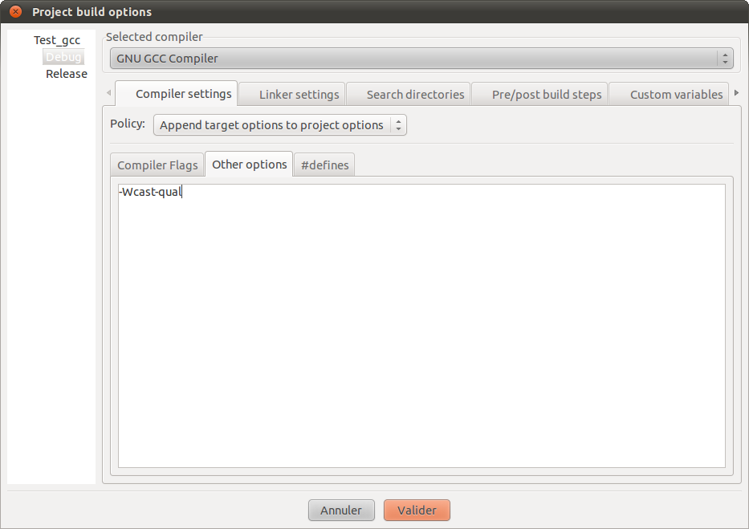

Si vous avez débuté la programmation en C++ avec le cours officiel présent sur ce site, vous avez appris à utiliser un compilateur pour transformer votre code source en programme exécutable. Le compilateur que beaucoup de monde utilise s'appelle g++. Il est disponible par défaut sous Linux et est aussi fourni (sous le nom MinGW) avec le logiciel Code::Blocks si vous travaillez sous Windows. Vous utilisez donc probablement ce logiciel tous les jours, mais le connaissez-vous vraiment ? :lol:
G++ possède à ce jour plus de 1 500 (!) options différentes permettant de modifier son comportement. Je ne vais bien évidemment pas vous détailler chacune d'entre elles, mais vous en présenter quelques-unes que je trouve importantes.
Vous avez certainement déjà reçu beaucoup de messages complexes de la part de votre compilateur, ce qui n'est pas toujours très réjouissant à lire. Je vais, au travers de ce tutoriel, vous aider à vous familiariser un peu plus avec cet outil et peut-être deviendra-t-il un jour votre nouveau meilleur ami.
Un compilateur est un logiciel très (très) complexe, et je ne vais pas vous en décrire le fonctionnement exact. De toute façon, on n'a pas besoin de le connaître pour l'utiliser, comme vous l'avez fait jusqu'à aujourd'hui. Il est cependant important d'en connaître les grands principes pour mieux l'apprivoiser et l'utiliser dans les meilleures conditions.
Très brièvement, un compilateur est un programme qui va traduire votre code source en un fichier contenant des instructions exécutables par le processeur de votre ordinateur. Cela se passe en plusieurs étapes que je vais vous présenter sommairement au travers d'un exemple bien connu, le fameux « Hello World ! ».
Voici donc notre code source de départ :
#include <iostream>
using namespace std;
int main(int argc, char* argv[])
{
cout << "Hello World !" << endl;
return 0;
}
Le préprocesseur
La première chose que g++ va faire, c'est appeler le préprocesseur. Vous avez déjà entendu ce nom lorsque l'on vous a parlé des directives de preprocessing, les célèbres lignes commençant par #. Ce sont des lignes que le préprocesseur va lire, puis effectuer l'action associée. Dans notre exemple, il va inclure le contenu du fichier iostream en haut de notre programme.
Si l'on exécute uniquement le préprocesseur sur notre code d'exemple, on obtient un fichier de plus de 18 000 lignes. :o Voici à quoi ressemble la fin du fichier généré :
On reconnaît notre code source original à la fin et on peut aussi observer que la ligne #include <iostream> a été remplacée par une quantité d'autres choses.
La compilation
La deuxième étape est la plus intéressante, c'est l'étape de compilation. C'est à ce moment-là que le code va être effectivement traduit. La traduction se fait vers un autre langage, l'assembleur. C'est à ce moment aussi que g++ va afficher des messages d'erreur s'il trouve des choses non conformes dans votre code source. Comme notre code d'exemple est correct, rien ne s'affiche et la traduction vers l'assembleur se passe bien.
Cette fois, le fichier obtenu est bien plus court.
Si vous connaissez l'assembleur, vous saurez reconnaître certaines lignes. En tout cas, moi, je n'y comprends rien. ;)
Assemblage
Que reste-t-il à faire ? Une deuxième traduction, pardi ! Il faut transformer ce code assembleur en un fichier objet qui contient des instructions que le processeur comprend. Cette deuxième et dernière traduction s'appelle l'assemblage. Comme on n'a pas eu de problème jusque là, il n'y a pas de raison que cela ne continue pas : g++ nous fournit un exécutable qui va, sans surprise, nous donner le résultat attendu à l'exécution.
Hello World !
Et alors ?
Si je vous ai raconté tout cela, c'est pour vous familiariser un peu avec l'outil et pour vous montrer toute la complexité de la chose. C'est aussi parce que, dans la suite, je vais vous parler d'options permettant de régler le comportement de g++ lors du passage du préprocesseur et de la compilation principalement. Par exemple, si je demande à g++ d'être plus strict sur la conformité du code, je peux obtenir beaucoup de messages d'information. Notre code source initial semblait bien innocent mais, si j'affiche plus de messages, j'obtiens les warnings (nous verrons plus loin ce dont il s'agit) suivants :
Dans ce cas, il ne s'agit pas d'un message très intéressant, mais les informations données par g++ peuvent se révéler très importantes. Nous allons voir dans la suite comment demander à notre nouveau meilleur ami d'être plus bavard.
Bon, je vous ai montré que l'on pouvait obtenir plus d'informations lors de la compilation. Je vous ai également dit que cela se faisait en changeant les paramètres de compilation que l'on passe à g++. Donc, en théorie, vous savez tout. :) Il ne reste plus qu'à voir comment ces réglages se font. C'est ce que nous allons voir dans cette sous-partie.
Un paramètre de compilation se compose toujours de la forme -paramètre ou --paramètre, c'est-à-dire qu'il est constitué d'un tiret suivi du nom de l'option. Dans la très longue liste des paramètres, on trouve par exemple les options suivantes :
-Wall ;
-fomit-frame-pointer ;
-S ;
etc.
Comme vous pouvez le voir, certaines options ne sont constituées que d'une lettre, d'autres d'un mot ou même de plusieurs.
O.K., mais comment les utilise-t-on ? Et lesquelles faut-il utiliser ?
Je vais déjà commencer par la première de vos questions. Voyons comment passer un paramètre de compilation à g++. Je vais prendre l'exemple du paramètre -Wall puisque, comme vous le verrez dans la suite, c'est une option très courante.
Avec Code::Blocks
Sous Code::Blocks, la plupart des options de compilation usuelles sont facilement activables. Pour ce faire, il suffit de vous rendre dans le menu Projet et de choisir ensuite l'entrée Build options. Vous devriez vous retrouver avec une fenêtre ressemblant à celle se trouvant sur l'image.

Devant vous devrait se trouver un long menu composé de lignes compliquées. Mais, à la fin de ces lignes, vous devriez reconnaître les fameuses options ayant la forme -paramètre. Il n'y a donc rien de difficile à ce stade. Il suffit de cocher les cases qui vous intéressent.
Et si l'option que je souhaite ne se trouve pas dans la liste ?
J'y viens. Cela ne devrait pas vous arriver souvent puisque les options principales se trouvent sur cette page. Mais si cela devait malgré tout être le cas, il vous suffit de cliquer sur l'onglet Other options et d'indiquer les paramètres de compilation dans le champ de texte qui apparaît.

Toutefois, comme je vous l'ai dit, il est rare de devoir utiliser ce champ texte. Les créateurs de Code::Blocks ont pensé aux pauvres zéros comme nous et à nos besoins très standards en mettant presque tout ce qui est utile dans les cases à cocher.
Sous Linux en ligne de commande
Si vous travaillez sous Linux et que vous compilez en ligne de commande, ce sera encore plus simple. Il suffit d'ajouter les options que vous désirez lors de l'appel à g++.
Pour compiler le fichier hello.cpp en un programme hello, la syntaxe habituelle est la suivante :
g++ hello.cpp -o hello
Pour utiliser un paramètre de compilation, on l'ajoute simplement à la commande. Ce qui donne, par exemple :
g++ hello.cpp -o hello -Wall
Je pense qu'on ne peut pas vraiment faire plus simple… :p
Bon, il est maintenant temps de répondre à votre deuxième question. Quelles options de compilation faut-il choisir ?
La première grande catégorie d'options de GCC est l'ajout de warnings. Lorsque l'on rédige du code, il arrive que l'on fasse de petites erreurs d'inattention comme confondre les symboles = et == ou oublier d'initialiser une variable. Le code obtenu est souvent valide et le compilateur le traduit sans broncher. Par contre, le programme obtenu ne fait pas ce que l'on pensait et certaines erreurs sont difficiles à repérer. Le compilateur peut nous aider à repérer des instructions syntaxiquement valides, mais potentiellement erronées.
Le compilateur peut aussi nous aider à écrire du code entièrement conforme à la norme, ce qui devrait, en théorie, aider à porter le code d'une plate-forme à l'autre.
Je ne vais pas vous présenter tous les warnings existants car il y en a bien trop, mais je vais vous parler des plus courants ou, en tout cas, de ceux que j'utilise régulièrement.
Les options de base
Pour simplifier la vie des utilisateurs, les concepteurs de GCC ont regroupé les warnings les plus utiles dans ce que l'on pourrait appeler des super-options. Celle que tout le monde utilise est -Wall. Lorsque l'on active cette option, la plupart des erreurs courantes sont relevées et pourront ainsi être corrigées. Par exemple, si l'on oublie un return dans une fonction, le compilateur nous le dira. La fonction suivante ne prend pas en compte le cas a==0, mais on ne le remarque pas forcément au premier coup d'œil. Le compilateur, lui, détectera cette erreur.
int f(int a)
{
if(a<0)
return 2*a;
else if(a>0)
return 3*a;
}
Le message correspondant sera le suivant :
fonction.cpp: In function ‘int f(int)’:
fonction.cpp:7:1: warning: control reaches end of non-void function
Ce qu'on peut traduire par : « Il est possible d'atteindre la fin d'une fonction qui ne renvoie pas void ». Effectivement, si a==0, on atteint l'accolade fermante sans avoir passé par un return, ce qui est certainement une erreur. :)
Prenons un autre exemple classique, que j'ai repris du forum en le modifiant quelque peu :
int f(int a)
{
if(a=0)
return 2;
else
return 3;
}
Ce code est valide. Dans le if, la valeur 0 est assignée à a puis le test est effectué et, puisque la valeur est égale à 0, on passe toujours dans le else. Au premier coup d'œil, on ne remarque pas forcément qu'il manque un =. Le compilateur, lui, nous dit ceci :
fonction2.cpp: In function ‘int f(int)’:
fonction2.cpp:3:9: warning: suggest parentheses around assignment used as truth value
Ce que l'on peut traduire par : « Je vous suggère de mettre des parenthèses autour de l'assignation si vous voulez l'utiliser comme test ». Le compilateur est poli, il suppose que mettre un seul symbole = était ce que vous vouliez faire. Il vous propose donc de mettre des parenthèses autour pour bien montrer que c'est intentionnel.
À part ces deux exemples classiques d'erreurs, l'option -Wall va aussi indiquer les parenthèses ambiguës, les switch où des case manquent, les déclarations de variables et fonctions inutilisées dans le reste du code et bien d'autres choses encore.
L'autre option de base est -Wextra. Cette super-option active elle aussi une série de tests de conformité du code en particulier, elle autorise le compilateur à indiquer les variables initialisées ainsi que les arguments de fonctions inutilisés, par exemple :
int f(int a, int b)
{
int c;
if(c>a)
return 2;
else
return 3;
}
Cette fonction engendre deux messages d'avertissement :
fonction3.cpp:1:5: warning: unused parameter ‘b’
fonction3.cpp: In function ‘int f(int, int)’:
fonction3.cpp:4:3: warning: ‘c’ is used uninitialized in this function
Cette fois, les messages sont très explicites : la variable b n'est pas utilisée dans la fonction, ce qui est certainement une erreur et c n'a pas de valeur lors du test, ce qui est à coup sûr une erreur. ;) Même si le code est valide et compile. J'espère que ça va vous convaincre d'utiliser au maximum les warnings du compilateur.
Il reste une dernière super-option à voir : -pedantic. Elle vérifie que le code est conforme en tout point à la norme. Avec cette option activée et aucun message d'avertissement affiché, votre code devrait pouvoir compiler sur un autre OS et avec un autre compilateur. Mais ce n'est pas toujours aussi simple. Sachez simplement que cette option existe pour le jour où vous devrez créer du code portable.
Plus d'options
Après les options de base, je vous propose une petite sélection d'avertissements bien pratiques.
Les problèmes de pointeurs
Quand on manipule des pointeurs, il se peut que certaines opérations soient dangereuses ou aient des effets inattendus. Pour nous aider à repérer ces choses, il y a trois options à activer :
-Wpointer-arith qui affiche des messages si l'on fait des calculs du type pointeur + nombre ;
-Wcast-qual qui affiche des messages si l'on convertit un pointeur sur une constante en un pointeur sur une variable non constante ;
-Wcast-align qui affiche des messages si l'on convertit des pointeurs d'un type à l'autre alors que leur taille en mémoire est différente (par exemple de char* vers int*).
Mais comme manipuler directement des pointeurs est une opération assez rare en C++, on n'a pas souvent besoin de ces options.
Les conversions
Le compilateur est autorisé à convertir des nombres d'un type à l'autre, par exemple de double vers int et vice-versa. Cela peut avoir des conséquences sur la précision des calculs et il est possible de demander au compilateur de nous avertir quand il fait ce genre de conversions.
-Wconversion avertit quand des conversions automatiques sont effectuées.
-Wdouble-promotion avertit quand un float est converti en double.
-Wold-style-cast avertit quand des conversions « à la C » sont utilisées. En C++, on devrait toujours utiliser des static_cast ou les autres membres de la famille des casts.
Finalement, voyons quelques inclassables.
Les inclassables
Dans cette liste, il y a un peu de tout mais, comme toujours, il y a des cas particuliers qui pourront être évités grâce à ces options.
-Wfloat-equal avertit si l'on teste l'égalité de deux nombres à virgule. Une erreur courante lorsque l'on fait du calcul scientifique.
-Woverloaded-virtual affiche un message si une fonction virtuelle n'a pas la même signature dans une classe fille que dans sa classe mère.
-Wshadow affiche un message s'il y a deux variables de même nom dans la même portion de code.
-Weffc++ affiche un message si l'on ne suit pas les conseils de Scott Meyers présentés dans son livre Effective C++.
La liste est encore longue. Pour plus de détails, je vous renvoie à la documentation de GCC où vous pourrez trouver une centaine d'autres options plus ou moins intéressantes pour augmenter le niveau d'avertissement de votre compilateur.
Personnellement, j'utilise toujours beaucoup de warnings pour mes programmes afin de minimiser les erreurs de programmation. Voici ma liste d'options :
Cela fait beaucoup, mais c'est pour la bonne cause. :p
Pour les masochistes
Finalement, sachez qu'il est possible de convertir les messages d'avertissement en messages d'erreur. Votre code ne pourra alors compiler que si vous n'avez aucun warning. Pour ce faire, il faut activer l'option -Werror. Et si vraiment vous êtes paranoïaques, vous pouvez demander à GCC de s'arrêter à la première erreur plutôt que d'essayer de continuer un peu plus loin et d'afficher toutes les erreurs rencontrées. Dans ce cas, il faut utiliser l'option -Wfatal-errors.
Voyons maintenant une deuxième catégorie d'options de compilation : les optimisations.
Lorsqu'un programme est terminé et fonctionne conformément aux spécifications, les programmeurs attaquent la dernière étape : l'optimisation. C'est une tâche difficile et ce cours n'est pas là pour enseigner comment faire. Je vais juste vous présenter les options de base de g++ dans ce domaine.
Optimiser la taille de son programme
Optimiser un programme ne signifie pas nécessairement le faire aller plus vite. On a parfois envie de minimiser la taille qu'il prend en mémoire. C'est le cas des gens qui travaillent sur des micro-contrôleurs ou des systèmes embarqués, par exemple. Bien sûr, cela se fait parfois au détriment de la vitesse du programme. On ne peut pas gagner à la fois sur la vitesse et l'utilisation de la mémoire. ;)
L'option principale de g++ pour diminuer la taille de l'exécutable est -Os. Par exemple, le TP ZFraction du cours officiel a une taille de 14 415 octets sans options, et une taille de 14 283 octets avec l'option -Os activée. La différence ici est assez minime, mais comme ce programme n'est pas très gros, il n'y a pas non plus énormément de place à gagner. ;)
L'autre option importante est -s qui supprime toutes les informations de débogage de l'exécutable. Il devient alors plus difficile d'utiliser un débogueur ou des outils comme valgrind pour analyser son programme. Mais comme on est dans la phase d'optimisation, ce n'est normalement plus le moment de chercher des erreurs. Tout doit déjà fonctionner correctement. Avec l'option -s, le TP ZFraction a une taille de seulement 10 392 octets. La différence semble importante, mais c'est à nouveau un résultat faussé puisque le programme est très court mais possède beaucoup de fonctions. Sachez simplement que la plupart des programmes que vous installez sur votre ordinateur ont été compilés avec l'option -s.
Optimiser la vitesse
L'autre catégorie d'optimisation est bien sûr la recherche de vitesse.
Votre compilateur favori propose trois niveaux d'optimisation, -O1, -O2 et -O3, du moins optimisé au plus rapide. Les programmes générés seront en général de plus en plus gros et, surtout, la compilation devient de plus en plus longue au fur et à mesure que l'on monte dans les niveaux. Mais comme l'optimisation n'est pas une science exacte, il arrive souvent que le meilleur niveau soit -O2, le dernier pouvant parfois introduire des erreurs dans le code généré ou simplement ne pas être le plus rapide. -O2 est donc très souvent le meilleur choix à faire. À vous de tester, cela dépend énormément des algorithmes utilisés et de la manière dont vous accédez à la mémoire.
Il existe ensuite un très grand nombre d'options permettant d'optimiser des points particuliers, tels que l'ordre d'exécution des boucles imbriquées ou la manière dont les fonctions sont « inlinées ». À nouveau, la documentation vous permettra de faire vos choix parmi le nombre considérable d'options.
Personnellement, j'essaie toujours d'utiliser les options suivantes pour les versions release de mes programmes :
-O2 -s
Il faut ensuite jouer un peu avec d'autres options pour essayer de grappiller un peu plus de performance, mais, comme je vous l'ai dit, l'optimisation est une tâche difficile qui dépend non seulement du programme, mais aussi de la machine sur laquelle le programme est exécuté. Sachez simplement que ces options existent et où trouver les informations nécessaires.
Il existe encore bon nombre d'autres options, mais je pense avoir fait le tour des plus importantes d'entre elles. Si vous souhaitez en consulter la liste complète, je vous invite à aller faire un tour dans la documentation officielle, plus précisément ici.
N'hésitez pas non plus à venir faire un tour sur les forums pour discuter de ce texte et poser vos questions.